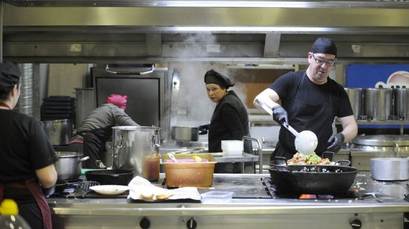

Descripción
Uno de los platos tradicionales del recetario catalán es la escalivada. Consiste en una combinación de verduras asadas, berenjena, pimiento, cebolla y tomate, regadas con buen aceite de oliva virgen extra. Escalivar significa, en catalán, asar al rescoldo y así es como se deben cocinar. No obstante, si no os es posible hacer de esta manera, siempre podéis tirar de horno. Lo importante es que no perdáis la oportunidad de probarla.
Ingredientes para 4 personas
- Berenjena
- Pimiento rojo
- Cebolla
- Cabeza de ajos
- Tomate
- Aceite de oliva virgen extra
- Sal gruesa
Tiempo
- Dificultad: Fácil
- Tiempo total: 1h 45m
- Elaboración: 15m
- Cocción: 1h 30m
- Reposo: 30m
Elaboración
Lavamos y secamos la berenjena, el pimiento y los tomates. Retiramos la capa exterior de las cebollas y de la cabeza de ajos. Pinchamos la berenjena con un cuchillo afilado para que no reviente con el calor del horno. Colocamos todas las verduras en una bandeja para horno, excepto los tomates, y las regamos con un poco de aceite de oliva virgen extra. Introducimos la bandeja en el horno precalentado a 170ºC durante una hora. Volteamos las verduras, incorporamos los tomates a la bandeja y asamos 30 minutos más. Dependiendo del tamaño de las verduras, especialmente de las cebollas, el tiempo puede necesitar ajustes así que el indicado es meramente orientativo. Comprobamos que estén tiernas las verduras antes de retirar la bandeja del horno y dejamos enfriar para poder quitar la piel y pepitas al pimiento y a la berenjena. Quitamos las capas exteriores de las cebollas y las troceamos. También sacamos, presionando ligeramente, los dientes de ajo de la cabeza asada. Vamos disponiendo todos los ingredientes en un plato, al que añadiremos una pizca de sal gruesa marina y los jugos del asado. Hay quien también le añade unas gotas de vinagre.
Con que acompañar la escalivada
Podemos servir la escalivada tal cual como entrante de una comida, como guarnición de carnes y pescados o sobre unas tostas de pan de pueblo para un picoteo informal. Si nos apetece enriquecerla, unas lascas de bacalao o unas anchoas en salazón son una gran opción. Se puede tomar tanto en frío como en templado.